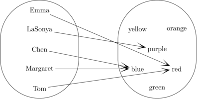
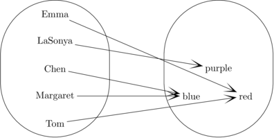
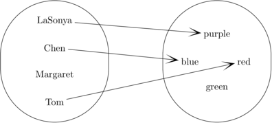
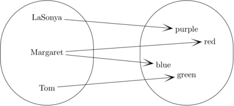
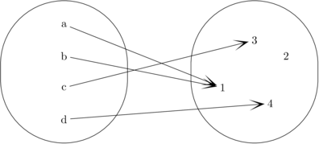

Chapter 7: Functions and onto
This chapter covers functions, including function composition and what it means for a function to be onto. In the process, we'll see what happens when two dissimilar quantifiers are nested.
7.1 Functions
We're all familiar with functions from high school and calculus. However, these prior math courses concentrate on functions whose inputs and outputs are numbers, defined by an algebraic formula such as $f(x) = 2x + 3$. We'll be using a broader range of functions, whose input and/or output values may be integers, strings, characters, and the like.
Suppose that $A$ and $B$ are sets, then a function $f$ from $A$ to $B$ is an assignment of exactly one element of $B$ (i.e. the output value) to each element of $A$ (i.e. the input value). $A$ is called the domain of $f$ and $B$ is called the co-domain. All of this information can be captured in the shorthand type signature: $f: A \rightarrow B$. If $x$ is an element of $A$, then the value $f(x)$ is also known as the image of $x$.
For example, suppose $P$ is a set of five people: $$P = \{\text{Margaret}, \text{Tom}, \text{Chen}, \text{LaSonya}, \text{Emma} \}$$ And suppose $C$ is a set of colors: $$C = \{\text{red}, \text{blue}, \text{green}, \text{purple}, \text{yellow},\text{orange} \}$$ We can define a function $f: P \rightarrow C$ which maps each person to their favorite color. For example, we might have the following input/output pairs: \begin{eqnarray*} f(\text{Margaret}) &=& \text{Blue} \\ f(\text{Tom}) &=& \text{Red}\\ f(\text{LaSonya}) &=& \text{Purple} \\ f(\text{Emma}) &=& \text{Red}\\ f(\text{Chen}) &=& \text{Blue} \end{eqnarray*}
We also use a bubble diagram to show how $f$ assigns output values
to input values.

Even if $A$ and $B$ are finite sets, there are a very large number of possible functions from $A$ to $B$. Suppose that $|A| = n$, $|B| = p$. We can write out the elements of $A$ as $x_1,x_2,\ldots,x_n$. When constructing a function $f:A\rightarrow B$, we have $p$ ways to choose the output value for $x_1$. The choice of $f(x_1)$ doesn't affect our possible choices for $f(x_2)$: we also have $p$ choices for that value. So we have $p^2$ choices for the first two output values. If we continue this process for the rest of the elements of $A$, we have $p^n$ possible ways to construct our function $f$.
For any set $A$, the identity function $\text{id}_A$ maps each value in $A$ to itself. That is, $\text{id}_A: A \rightarrow A$ and $\text{id}_A(x) = x$.
7.2 When are functions equal?
Notice that the domain and co-domain are an integral part of the definition of the function. To be equal, two functions must (obviously) assign the same output value to each input value. But, in addition, they must have the same type signature.
For example, suppose
$D$ is a slightly smaller set of colors:
$$D = \{\text{red}, \text{blue}, \text{purple}\}$$
Then the function $g:P \rightarrow D$ shown below is not equal
to the function $f$ in Figure 1.
Even though
$g(x) = f(x)$ for every $x$ in $P$,
their co-domains aren't the same.

Similarly, the following definitions describe quite different functions, even though they are based on the same equation.
- $f: \mathbb{N} \rightarrow \mathbb{N}$ such that $f(x) = 2x$.
- $f: \mathbb{R} \rightarrow \mathbb{R}$ such that $f(x) = 2x$.
However, the following are all definitions of the same function, because the three variations have the same type signature and assign the same output value to each input value.
- $f: \mathbb{Z} \rightarrow \mathbb{Z}$ such that $f(x) = |x|$.
- $f: \mathbb{Z} \rightarrow \mathbb{Z}$ such that $f(x) = \max(x,-x)$.
- $f: \mathbb{Z} \rightarrow \mathbb{Z}$ such that $f(x) = x$ if $x \ge 0$ and $f(x) = -x$ if $x \le 0$.
Notice that the last definition uses two different cases to cover different parts of the domain. This is fine, as long as all the cases, taken together, provide exactly one output value for each input value.
7.3 What isn't a function?
For each input value, a function must provide one and only one output value.
So the following isn't a function, because one input has no output:

The following isn't a function, because one input is paired with two outputs:

7.4 Images and Onto
The image of the function $f:A \rightarrow B$ is the set of values produced when $f$ is applied to all elements of $A$. That is, the image is $$f(A) = \{f(x) : x \in A\}$$
For example, suppose $M = \{a,b,c,d\}$, $N = \{1,2,3,4\}$, and
our function $g:M \rightarrow N$ is as in the following diagram.
Then $g(A) = \{1,3,4\}$.

A function $f:A \rightarrow B$ is onto if its image is its whole co-domain. Or, equivalently, $$\forall y \in B, \exists x \in A, f(x) = y$$ The function $g$ that we just saw isn't onto, because no input value is mapped onto 2.
Whether a function is onto critically depends on its type signature. Suppose we define $p:\mathbb{Z} \rightarrow \mathbb{Z}$ by $p(x) = x+2$. If we pick an output value $y$, then the input value $y-2$ maps onto $y$. So the image of $p$ is all of $\mathbb{Z}$. So this function is onto.
However, suppose we define $q:\mathbb{N} \rightarrow \mathbb{N}$ using the same formula $q(x) = x+2$. $q$ isn't onto, because none of the input values map onto 0 or 1.
7.5 Why are some functions not onto?
You may think many examples of non-onto functions look like they could have been onto if the author had set up the co-domain more precisely. Sometimes the co-domain is excessively large simply because the image set is awkward to specify succinctly. But, also, in some applications, we specifically want certain functions not to be onto.
For example, in graphics or certain engineering applications, we may wish to map out or draw a curve in 2D space. The whole point of the curve is that it occupies only part of 2D and it is surrounded by whitespace. These curves are often specified ``parametrically,'' using functions that map into, but not onto, 2D.
For example, we can specify a (unit) circle as the image of a function $f:[0,1] \rightarrow \mathbb{R}^2$ defined by $f(x) = (\cos 2\pi x, \sin 2\pi x)$. If you think of the input values as time, then $f$ shows the track of a pen or robot as it goes around the circle. The cosine and sine are the $x$ and $y$ coordinates of its position. The $2 \pi$ multiplier simply puts the input into the right range so that we'll sweep exactly once around the circle (assuming that sine and cosine take their inputs in radians).
7.6 Negating onto
To understand the concept of onto, it may help to think about what it means for a function not to be onto. This is our first example of negating a statement involving two nested (different) quantifiers. Our definition of onto is $$\forall y \in B, \exists x \in A, f(x) = y$$
So a function $f$ is not onto if $$\neg \forall y \in B, \exists x \in A, f(x) = y$$
To negate this, we proceed step-by-step, moving the negation inwards. You've seen all the identities involved, so this is largely a matter of being careful.
- $\neg \forall y \in B, \exists x \in A, f(x) = y$
- $\equiv \exists y \in B, \neg \exists x \in A, f(x) = y$
- $\equiv \exists y \in B, \forall x \in A, \neg (f(x) = y)$
- $\equiv \exists y \in B, \forall x \in A, f(x) \not = y$
So, if we want to show that $f$ is not onto, we need to find some value $y$ in $B$, such that no matter which element $x$ you pick from $A$, $f(x)$ isn't equal to $y$.
7.7 Nested quantifiers
Notice that the definition of onto combines a universal and an existential quantifier, with the scope of one including the scope of the other. These are called nested quantifiers. When quantifiers are nested, the meaning of the statement depends on the order of the two quantifiers.
For example,
For every person $p$ in the Fleck family, there is a toothbrush $t$ such that $p$ brushes their teeth with $t$.
This sentence asks you to consider some random Fleck. Then, given that choice, it asserts that they have a toothbrush. The toothbrush is chosen after we've picked the person, so the choice of toothbrush can depend on the choice of person. This doesn't absolutely force everyone to pick their own toothbrush. (For a brief period, two of my sons were using the same one because they got confused.) However, at least this statement is consistent with each person having their own toothbrush.
Suppose now that we swap the order of the quantifiers, to get
There is a toothbrush $t$, such that for every person $p$ in the Fleck family, $p$ brushes their teeth with $t$.
In this case, we're asked to choose a toothbrush $t$ first. Then we're asserting that every Fleck uses this one fixed toothbrush $t$. Eeeuw! That wasn't what we wanted to say!
We do want the existential quantifier first when there's a single object that's shared among the various people, as in:
There is a stove $s$, such that for every person $p$ in the Fleck family, $p$ cooks his food on $s$.
Notice that this order issue only appears when a statement a mixture of existential and universal quantifiers. If all the quantifiers are existential, or if all the quantifiers are universal, the order doesn't matter.
To take a more mathematical example, let's look back at modular arithmetic. Two numbers $x$ and $y$ are multiplicative inverses if $xy = yx = 1$. In the integers $\mathbb{Z}$, only 1 has a multiplicative inverse. However, in $\mathbb{Z}_k$, many other integers have inverses. For example, if $k=7$, then $[3][5] = [1]$. So $[3]$ and $[5]$ are inverses.
For certain values of $k$ every non-zero element of $\mathbb{Z}_k$ has an inverse. (Can you figure out which values of $k$ have this property?) You can verify that this is true for $\mathbb{Z}_7$: $[3]$ and $[5]$ are inverses, $[2]$ and $[4]$ are inverses, $[1]$ is its own inverse, and $[6]$ is its own inverse. So we can say that $$\forall \text{ non-zero } x \in \mathbb{Z}_7,\ \exists y \in \mathbb{Z}_7, \ xy = yx = 1$$
Notice that we've put the universal quantifier outside the existential one, so that each number gets to pick its own inverse. Reversing the order of the quantifers would give us the following statement: $$ \exists y \in \mathbb{Z}_7,\ \forall \text{ non-zero } x \in \mathbb{Z}_7,\ xy = yx = 1$$
This version isn't true, because you can't pick one single number that works as an inverse for all the rest of the non-zero numbers, even in modular arithmetic.
However, we do want the existential quantifier first in the following claim, because $0y = y0 = 0$ for every $y \in \mathbb{Z}_7$. $$\exists x \in \mathbb{Z}_7,\ \forall y \in \mathbb{Z}_7, \ xy = yx = x$$
7.8 Proving that a function is onto
Now, consider this claim:
Claim 1: Define the function $g$ from the integers to the integers by the formula $g(x) = x-8$. $g$ is onto.
Proof: We need to show that for every integer $y$, there is an integer $x$ such that $g(x) = y$.So, let $y$ be some arbitrary integer. Choose $x$ to be $(y+8)$. $x$ is an integer, since it's the sum of two integers. But then $g(x) = (y+8) - 8 = y$, so we've found the required pre-image for $y$ and our proof is done.
For some functions, several input values map onto a single output value. In that case, we can choose any input value in our proof, typically whichever is easiest for the proof-writer. For example, suppose we had $g:\mathbb{Z} \rightarrow \mathbb{Z}$ such that $g(x) = \lfloor \frac{x}{2} \rfloor$. To show that $g$ is onto, we're given an output value $x$ and need to find the corresponding input value. The simplest choice would be $2x$ itself. But you could also pick $2x+1$.
Suppose we try to build such a proof for a function that isn't onto, e.g. $f:\mathbb{Z} \rightarrow \mathbb{Z}$ such that $f(x) = 3x+2$.
Proof: We need to show that for every integer $y$, there is an integer $x$ such that $f(x) = y$.So, let $y$ be some arbitrary integer. Choose $x$ to be $\frac{(y-2)}3$.
[Uh, oh. We need $x$ to be an integer.]
If $f$ was a function from the reals to the reals, we'd be ok at this point, because $x$ would be a good pre-image for $y$. However, $f$'s inputs are declared to be integers. For many values of $y$, $\frac{(y-2)}3$ isn't an integer. So it won't work as an input value for $f$.
7.9 A 2D example
Here's a sample function whose domain is 2D. Let $f:\mathbb{Z}^2 \rightarrow \mathbb{Z}$ be defined by $f(x,y) = x+y$. I claim that $f$ is onto.
First, let's make sure we know how to read this definition. $f:\mathbb{Z}^2$ is shorthand for $\mathbb{Z} \times \mathbb{Z}$, which is the set of pairs of integers. So $f$ maps a pair of integers to a single integer, which is the sum of the two coordinates.
To prove that $f$ is onto, we need to pick some arbitrary element $y$ in the co-domain. That is to say, $y$ is an integer. Then we need to find a sample value in the domain that maps onto $y$, i.e. a ``preimage'' of $y$. At this point, it helps to fiddle around on our scratch paper, to come up with a suitable preimage. In this case, $(0,y)$ will work nicely. So our proof looks like:
Proof: Let $y$ be an element of $\mathbb{Z}$. Then $(0,y)$ is an element of $f:\mathbb{Z}^2$ and $f(0,y) = 0+y = y$. Since this construction will work for any choice of $y$, we've shown that $f$ is onto.
Notice that this function maps many input values onto each output value. So, in our proof, we could have used a different formula for finding the input value, e.g. $(1,y-1)$ or $(y,0)$. A proof writer with a sense of humor might use $(342,y-342)$.
7.10 Composing two functions
Suppose that $f:A\rightarrow B$ and $g:B\rightarrow C$ are functions. Then $g \circ f$ is the function from $A$ to $C$ defined by $(g \circ f)(x) = g(f(x))$. Depending on the author, this is either called the composition of $f$ and $g$ or the composition of $g$ and $f$. The idea is that you take input values from $A$, run them through $f$, and then run the result of that through $g$ to get the final output value.
Take-home message: when using function composition, look at the author's shorthand notation rather than their mathematical English, to be clear on which function gets applied first.
In this definition, notice that $g$ came first in $(g \circ f)(x)$ and $g$ also comes first in $g(f(x))$. I.e. unlike $f(g(x))$ where $f$ comes first. The trick for remembering this definition is to remember that $f$ and $g$ are in the same order on the two sides of the defining equation.
For example, suppose we define two functions $f$ and $g$ from the integers to the integers by: $$f(x) = 3x + 7$$ $$g(x) = x-8$$
Since the domains and co-domains for both functions are the integers, we can compose the two functions in both orders. But two composition orders give us different functions: $$(f \circ g)(x) = f(g(x)) = 3g(x) + 7 = 3(x-8) + 7 = 3x - 24 + 7 = 3x -17$$ $$(g \circ f)(x) = g(f(x)) = f(x) - 8 = (3x+7) - 8 = 3x -1$$
Frequently, the declared domains and co-domains of the two functions aren't all the same, so often you can only compose in one order. For example, consider the function $h: \{strings\} \rightarrow \mathbb{Z}$ which maps a string $x$ onto its length in characters. (E.g. $h(\texttt{Margaret}) = 8$.) Then $f \circ h$ exists but $(h \circ f)$ doesn't exist because $f$ produces numbers and the inputs to $h$ are supposed to be strings.
7.11 A proof involving composition
Let's show that onto-ness works well with function composition. Specifically:
Claim 2: For any sets $A$, $B$, and $C$ and for any functions $f:A \rightarrow B$ and $g:B \rightarrow C$, if $f$ and $g$ are onto, then $g \circ f$ is also onto.
Proof: Let $A$, $B$, and $C$ be sets. Let $f:A \rightarrow B$ and $g:B \rightarrow C$ be functions. Suppose that $f$ and $g$ are onto.We need to show that $g \circ f$ is onto. That is, we need to show that for any element $x$ in $C$, there is an element $y$ in $A$ such that $(g \circ f)(y) = x$.
So, pick some element $x$ in $C$. Since $g$ is onto, there is an element $z$ in $B$ such that $g(z) = x$. Since $f$ is onto, there is an element $y$ in $A$ such that $f(y) = z$.
Substituting the value $f(y) = z$ into the equation $g(z) = x$, we get $g(f(y)) = x$. That is, $(g \circ f)(y) = x$. So $y$ is the element of $A$ we needed to find.
7.12 Variation in terminology
A function is often known as a ``map'' and ``surjective'' is often used as a synonym for ``onto.'' The image of a function is sometimes written $Im(f)$. The useful term ``type signature'' is not traditional in pure mathematics, though it's in wide use in computer science.
The term ``range'' is a term that has become out-dated in mathematics. Depending on the author, it may refer to either the image or the co-domain of a function, which creates confusion. Avoid using it.
Some authors write $gf$ rather than $g\circ f$ for the composition of two functions. Also, some authors define $g\circ f$ such that $g\circ f(x) = f(g(x))$, i.e. the opposite convention from what we're using.